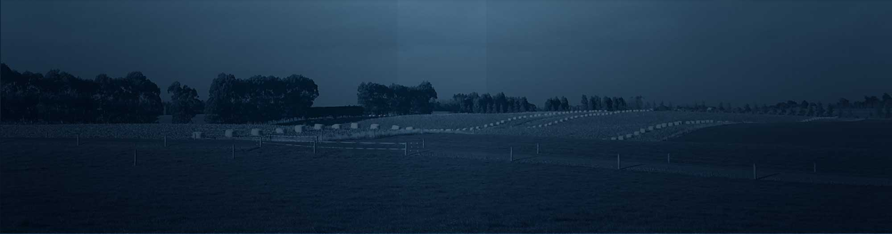

Farmtrenz

Effluent & farm monitoring
Our fail-safe TIM and KIM systems watch your effluent pond, pumps and irrigators, shutting down the instant something's wrong. Weather stations, water bores, tanks and fence monitoring too.
Farmtrenz brochures